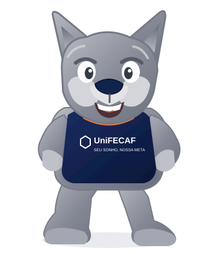

TECNOLOGIAO futuro
é digitalIDEIAS • SISTEMAS • INOVAÇÃO
é digitalIDEIAS • SISTEMAS • INOVAÇÃO
Tecnologia
Introdução ao Mundo Digital
Conceitos essenciais para compreender a transformação digital.
Saiba maisCONHECIMENTO AO SEU ALCANCE
Um lugar para encontrar ideias, ampliar repertório e acompanhar cada etapa da sua jornada acadêmica.

ENCONTRE SEU CAMINHO
Comece por um assunto que desperta sua curiosidade.
SUGESTÕES PARA VOCÊ
Uma seleção demonstrativa para inspirar sua próxima leitura.
Conceitos essenciais para compreender a transformação digital.
Saiba maisUma visão introdutória sobre organização, estratégia e colaboração.
Saiba maisEstratégias para desenvolver autonomia e hábitos de estudo.
Saiba maisNota: os títulos e as descrições são exemplos demonstrativos criados para o projeto; não representam confirmação do acervo real da UniFECAF.
MAIS DO QUE LIVROS
Use a biblioteca como ponto de partida para pesquisar, aprofundar conhecimentos e desenvolver novas habilidades durante sua trajetória acadêmica.
Voltar ao inícioEncontre materiais de apoio para seus estudos e trabalhos acadêmicos.
Navegue por áreas de conhecimento de forma clara e intuitiva.
Descubra novas leituras e amplie sua experiência acadêmica.